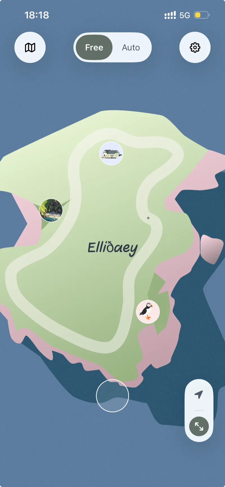
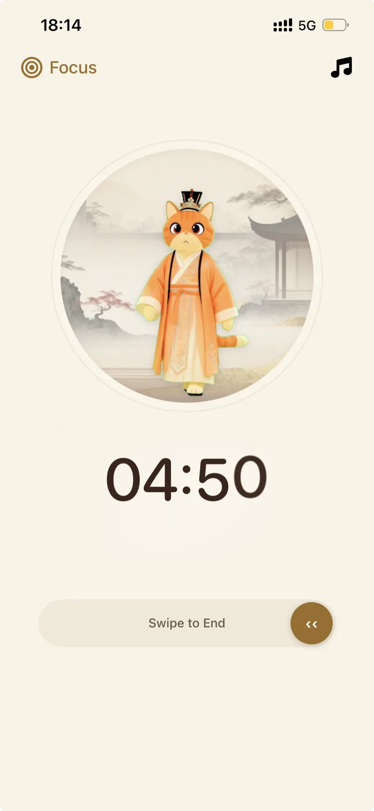
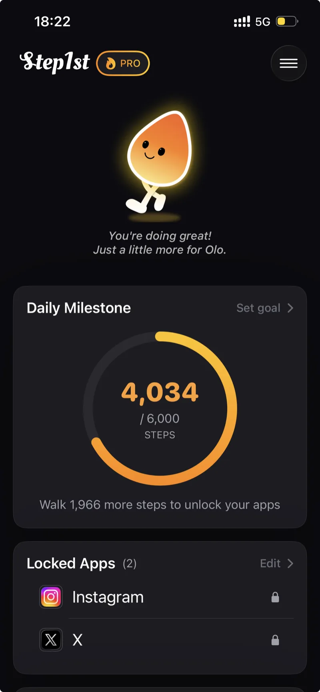
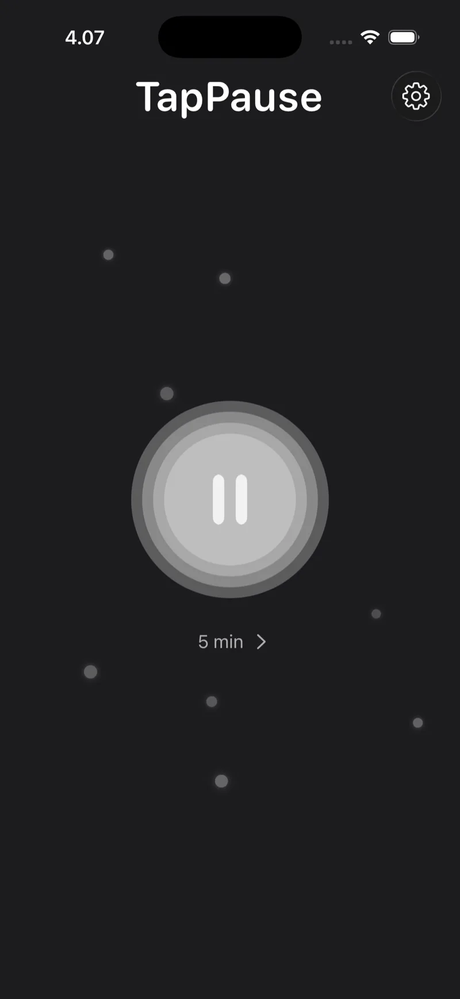
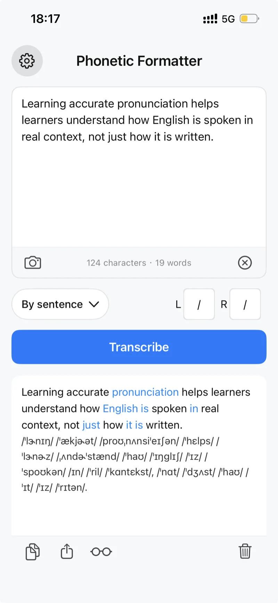
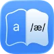
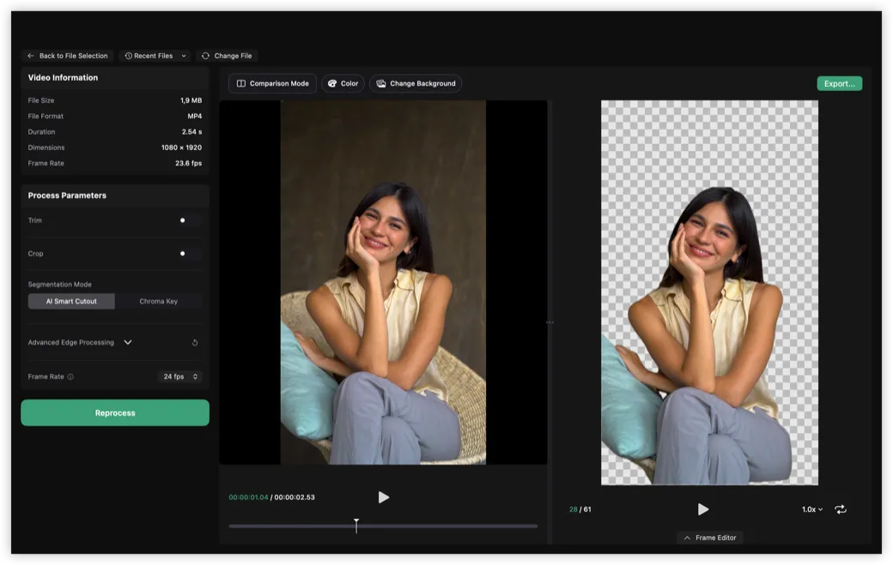
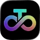

LonelyIsle: Island Soundscapes
Explore fictional islands and living soundscapes for deep focus, restful sleep, and quiet moments away from everyday noise.
Lightweight, offline-first utilities crafted with absolute minimalism, for your daily life and technical workflows.

Explore fictional islands and living soundscapes for deep focus, restful sleep, and quiet moments away from everyday noise.

PurrrrrFocus is a Pomodoro and focus timer in a Zen-inspired space—with a gentle partner that keeps you company while you study, work, or unwind.

Unlock your apps with step goals. Reduce screen time and stay active.

A minimal pause timer for iPhone to take mindful breaks without distraction.


Convert English text into clear, structured IPA phonetic transcription. Designed for teachers, linguistics students, and serious learners.


Preview, convert, and create high-quality GIF, APNG, and WebP animations. Remove video backgrounds instantly with local AI — no cloud uploads.
Where software meets practice. I built the Born To Speak Lab as a content companion to my apps — a space for role-play scripts, board-game prompts, and real-world practice to help you move from "learning" to "speaking" with confidence.
Integrated with Phonetic Formatter to bridge the gap between accurate IPA symbols and natural spoken English. It's a complete loop: from clear tools to fluent conversations.
A content initiative by Louis Builds · Bridging tools and fluency · Since 2024
How a struggle with high-quality animations led to the creation of TransMov and a leaner, smoother PurrrrrFocus.
Building a word-aligned transcription engine that works 100% offline.
From SaaS notification chaos to building PurrrrrFocus—a quiet Pomodoro sanctuary for reclaiming deep work.
My commitment to privacy: why none of my apps require an account.
Occasional notes on building, focus, and quiet software.
Read more on Substack →